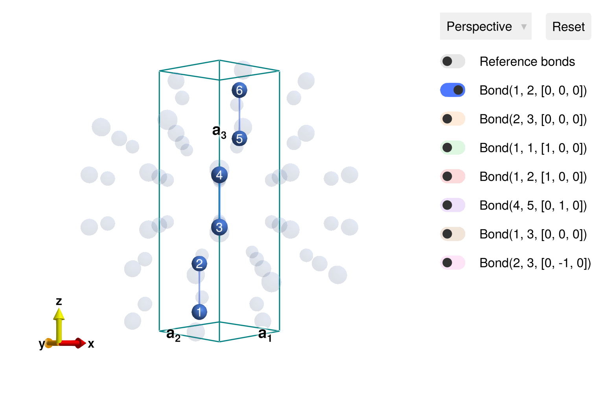
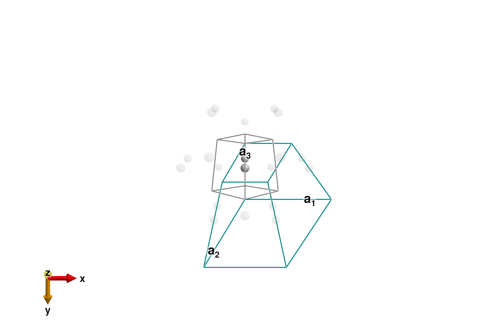
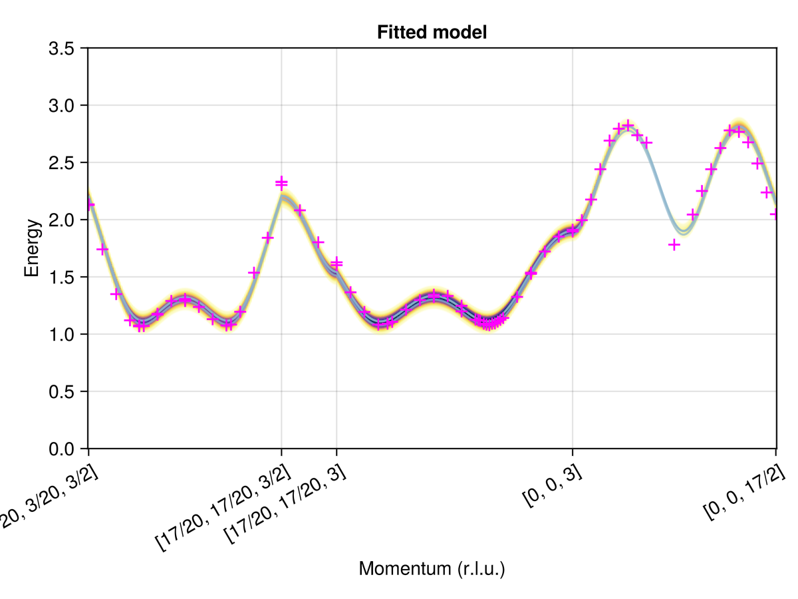

Download this example as Julia file or Jupyter notebook.
12. Fitting to the dispersion of a dimerized magnet
This tutorial fits the exchange constants of Ba₃Mn₂O₈ following Stone et al., Phys. Rev. Lett. 100, 237201 (2008). Strong antiferromagnetic exchange coupling between neighboring spin-1 sites yields effective dimerization into an entangled singlet state. Dynamical spin-spin correlations arise from triplon excitations. Sunny can model this physics within its entangled units formalism.
using Sunny, GLMakie, LinearAlgebraBa₃Mn₂O₈ belongs to spacegroup R-3m (166). The magnetic Mn⁵⁺ ions occupy Wyckoff position 6c.
a = 5.710728
c = 21.44383
latvecs = lattice_vectors(a, a, c, 90, 90, 120)
positions = [[0, 0, 0.40708]]
cryst = Crystal(latvecs, positions, 166)
view_crystal(cryst)
Label Heisenberg exchanges following Stone et al. Initialize the interaction strengths to zero.
sys = System(cryst, [1 => Moment(s=1, g=2)], :SUN)
set_exchange!(sys, 1.0, Bond(1, 2, [0, 0, 0]), :J0 => 0)
set_exchange!(sys, 1.0, Bond(2, 3, [0, 0, 0]), :J1 => 0)
set_exchange!(sys, 1.0, Bond(1, 1, [1, 0, 0]), :J2 => 0)
set_exchange!(sys, 1.0, Bond(1, 2, [1, 0, 0]), :J3 => 0)
set_exchange!(sys, 1.0, Bond(4, 5, [0, 1, 0]), :J4 => 0)
set_onsite_coupling!(sys, S -> S[3]^2, 1, :D => 0)To build intuition, we begin with a reduced model that includes just antiferromagnetic exchange $J_0$ between each pair of nearest-neighbor sites. When quantum entanglement is neglected, this interaction favors anti-alignment of the spin dipoles on each dimer, yielding a total energy of $-J_0/2$ per site.
set_param!(sys, :J0, 1.0)
randomize_spins!(sys)
minimize_energy!(sys)
energy_per_site(sys)-0.5000000000000002The true ground state of each spin-1 dimer is the singlet $(|1,-1⟩ - |0,0⟩ + |-1,1⟩) / \sqrt{3}$ with an energy of $-J_0$ per site. Use entangle_system to capture this dimer physics exactly.
dimers = [[1, 2], [3, 4], [5, 6]]
esys = entangle_system(sys, dimers)
randomize_spins!(esys)
minimize_energy!(esys)
energy_per_site(esys)-1.0000000000000002To accelerate spin wave calculations, we move to the rhombohedral primitive cell, which contains just one dimer. As a consistency check, verify that this reshaping preserves the energy per site.
esys = reshape_supercell(esys, primitive_cell(cryst))
energy_per_site(esys)-1.0000000000000004Spin dipole expectations vanish in the dimer singlet state. See this with plot_spins.
plot_spins(esys; ghost_radius=8.0)
We will fit to intensity peak data extracted from Fig. 3 of Stone et al. This data provides one energy for each $𝐪$-point along a certain path in [H, H, L] space.
qs = [[0.15, 0.15, 1.5], [0.15, 0.15, 1.5], [0.2, 0.2, 1.5], [0.25, 0.25, 1.5], [0.3, 0.3, 1.5], [1/3, 1/3, 1.5], [1/3, 1/3, 1.5], [1/3, 1/3, 1.5], [0.35, 0.35, 1.5], [0.4, 0.4, 1.5], [0.4, 0.4, 1.5], [0.45, 0.45, 1.5], [0.5, 0.5, 1.5], [0.5, 0.5, 1.5], [0.5, 0.5, 1.5], [0.55, 0.55, 1.5], [0.6, 0.6, 1.5], [0.65, 0.65, 1.5], [2/3, 2/3, 1.5], [0.7, 0.7, 1.5], [0.75, 0.75, 1.5], [0.8, 0.8, 1.5], [0.85, 0.85, 1.5], [0.85, 0.85, 1.5], [0.85, 0.85, 1.5], [0.85, 0.85, 2.0], [0.85, 0.85, 2.5], [0.85, 0.85, 3.0], [0.85, 0.85, 3.0], [0.8, 0.8, 3.0], [0.75, 0.75, 3.0], [0.7, 0.7, 3.0], [2/3, 2/3, 3.0], [0.65, 0.65, 3.0], [0.6, 0.6, 3.0], [0.55, 0.55, 3.0], [0.5, 0.5, 3.0], [0.5, 0.5, 3.0], [0.45, 0.45, 3.0], [0.4, 0.4, 3.0], [0.4, 0.4, 3.0], [0.35, 0.35, 3.0], [0.34, 0.34, 3.0], [1/3, 1/3, 3.0], [0.32, 0.32, 3.0], [0.31, 0.31, 3.0], [0.3, 0.3, 3.0], [0.29, 0.29, 3.0], [0.28, 0.28, 3.0], [0.27, 0.27, 3.0], [0.26, 0.26, 3.0], [0.25, 0.25, 3.0], [0.2, 0.2, 3.0], [0.15, 0.15, 3.0], [0.15, 0.15, 3.0], [0.1, 0.1, 3.0], [0.05, 0.05, 3.0], [0.0, 0.0, 3.0], [0.0, 0.0, 3.0], [0.0, 0.0, 3.25], [0.0, 0.0, 3.5], [0.0, 0.0, 3.75], [0.0, 0.0, 4.0], [0.0, 0.0, 4.25], [0.0, 0.0, 4.5], [0.0, 0.0, 4.75], [0.0, 0.0, 5.0], [0.0, 0.0, 5.75], [0.0, 0.0, 6.25], [0.0, 0.0, 6.5], [0.0, 0.0, 6.75], [0.0, 0.0, 7.0], [0.0, 0.0, 7.25], [0.0, 0.0, 7.5], [0.0, 0.0, 7.75], [0.0, 0.0, 8.0], [0.0, 0.0, 8.25], [0.0, 0.0, 8.5]]
Es = [[2.133], [2.127], [1.740], [1.349], [1.120], [1.075], [1.070], [1.068], [1.070], [1.177], [1.169], [1.289], [1.307], [1.292], [1.289], [1.237], [1.130], [1.075], [1.083], [1.195], [1.536], [1.841], [2.331], [2.328], [2.302], [2.081], [1.802], [1.627], [1.602], [1.365], [1.193], [1.083], [1.091], [1.107], [1.213], [1.297], [1.344], [1.323], [1.333], [1.247], [1.198], [1.127], [1.123], [1.117], [1.091], [1.083], [1.078], [1.091], [1.094], [1.109], [1.125], [1.141], [1.325], [1.536], [1.526], [1.721], [1.852], [1.911], [1.896], [1.995], [2.175], [2.440], [2.690], [2.794], [2.823], [2.737], [2.672], [1.781], [2.044], [2.250], [2.440], [2.625], [2.779], [2.766], [2.675], [2.490], [2.237], [2.047]]Crystal field data fixes the easy-axis anisotropy to $D = -0.032$ (meV). At weak inter-dimer exchange coupling, an RPA analysis shows that the dispersion is entirely controlled by four parameters $(J_0, J_1, J_2 - J_3, J_4)$. We arbitrarily fix $J_3 = 0$`.
set_params!(esys, [:D, :J3], [-0.032, 0])Identify the remaining fitting parameters.
labels = [:J0, :J1, :J2, :J4]Use make_loss_fn to define the optimization target. It expects a vector of values for the four fitting parameters and returns a goodness of fit. Internally, squared_error_bands assigns each experimentally labeled peak in Es to the closest spin wave mode in res (disallowing duplicated assignments). We omit the call to minimize_energy because the dimer has already been initialized to the correct singlet ground state.
measure = ssf_perp(esys; formfactors=[1=>FormFactor("Mn5")])
loss = make_loss_fn(esys, labels) do esys
# minimize_energy!(sys) # Uncomment if the spin state should vary with params
swt = SpinWaveTheory(esys; measure)
res = intensities_bands(swt, qs)
squared_error_bands(Es, res; intensity_cutoff=1e-6)
endFittingLoss([:J0, :J1, :J2, :J4])
Guess some initial parameters and evaluate the loss. Smaller is better.
guess = [1.0, 0.0, 0.0, 0.0]
loss(guess)0.241797198932823Minimize the loss with the Nelder-Mead method from the Optim package.
import Optim
method = Optim.NelderMead()
options = Optim.Options(; g_tol=1e-8)
fit = Optim.optimize(loss, guess, method, options)
fit.minimizer # [J0, J1, J2, J4]4-element Vector{Float64}:
1.6518189066623419
0.12238643038561997
0.11286293281323903
0.03950866918642754Report misfit tolerances derived from uncertainty_matrix.
U = uncertainty_matrix(loss, fit.minimizer)
sqrt.(diag(U) / 2) # [ΔJ0, ΔJ1, ΔJ2, ΔJ4]4-element Vector{Float64}:
0.03550055381246908
0.020500159567321066
0.007944237712755788
0.01643787483682922The optimized parameters precisely reproduce previous work:
| Parameter | This study (meV) | Stone et al. (meV) |
|---|---|---|
| $J_0$ | 1.65 ± 0.04 | 1.642 |
| $J_1$ | 0.12 ± 0.02 | 0.118 |
| $J_2 - J_3$ | 0.11 ± 0.01 | 0.114 |
| $J_4$ | 0.04 ± 0.02 | 0.037 |
Per the published erratum of Stone et al., all fitted exchanges are correctly antiferromagnetic.
Finally, plot the fitted dispersion together with the labeled peak data. The helper find_qs_along_path maps each labeled $𝐪$-point to an index along the path, which serves as an $x$-coordinate within the plot_intensities scene.
points = [
[0.15, 0.15, 1.5],
[0.85, 0.85, 1.5],
[0.85, 0.85, 3.0],
[0.0, 0.0, 3.0],
[0.0, 0.0, 8.5],
]
path = q_space_path(cryst, points, 400)
set_params!(esys, labels, fit.minimizer)
swt = SpinWaveTheory(esys; measure)
res = intensities_bands(swt, path)
fig = plot_intensities(res; ylims=(0, 3.5), title="Fitted model")
qinds = find_qs_along_path(qs, path)
data_pairs = [(q, Eq) for (q, Eqs) in zip(qinds, Es) for Eq in Eqs]
scatter!(fig[1, 1], data_pairs; marker='+', color=:magenta, markersize=20)
fig